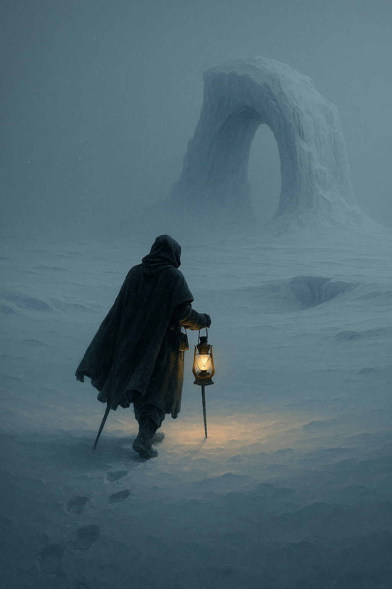

Donde la luz no guía… pero escucha tus pensamientos.
Relato de exploración
El mar se abrió en silencio. No hubo viento, ni oleaje, ni brújula que advirtiera lo inusual. Simplemente apareció. Una isla que no figuraba en ningún mapa, cubierta por una nieve inmóvil, intacta, suspendida en el aire como si el tiempo la hubiese olvidado allí.
Blanca, serena, impenetrable.
El agente Vega desembarcó sin dejar huellas. La nieve no crujía bajo sus botas. El aire era denso, frío sin ser doloroso, como si el invierno hubiese dejado de ser una estación y se hubiese convertido en estado.
Las construcciones parecían recientes, aunque la vegetación las reclamaba con lentitud. Un farol encendido oscilaba levemente, detenido en un parpadeo eterno. En una plaza cubierta por una fina escarcha, un reloj marcaba las doce y veintisiete. No avanzaba. Tampoco
se había detenido. Solo estaba... esperando.
En el centro del pueblo, una estatua sin rostro extendía la mano hacia el cielo cubierto. Al tocarla, Vega sintió una punzada en el pecho: un recuerdo de infancia que no le pertenecía. Luego otro. Y otro más. Voces, risas, inviernos pasados que no vivió.
Fue entonces cuando comprendió: la isla no era un lugar, era una memoria. Un fragmento aislado de algún invierno perdido, detenido en el instante en que alguien deseó que el tiempo no siguiera. El deseo se cumplió. Pero a un precio.
Cuando quiso volver, la barca había desaparecido. O quizás nunca estuvo. Al mirar hacia el horizonte, la nieve seguía cayendo... sin moverse.
Informe de Estado
- Accesibilidad: Aparece en mares del norte durante noches sin luna. No detectable por radar ni instrumentos de navegación convencionales.
- Recomendación de la Sociedad: No permanecer más de tres horas. No tocar objetos que generen recuerdos intensos.
- Estado del archivo: Estático. Sin variaciones desde la primera visita documentada en 1981. Anomalía temporal activa.
Informe clasificado — X-024I. Registrado el 7 de diciembre de 2024.
Registro Visual
Algunas imágenes han sido rescatadas de antiguos dispositivos, otras fueron dibujadas de
memoria por quienes lograron regresar. Todas ellas capturan instantes que el tiempo quiso enterrar.

Fragmentos Recuperados
Notas garabateadas en los márgenes de un abrigo abandonado, testimonios grabados entre cristales empañados, pensamientos congelados en el momento exacto en que alguien olvidó volver. Aquí reposan los ecos de quienes pisaron la nieve que nunca cae.
“Mi reloj no se detuvo. Simplemente... dejó de tener sentido.”
— Cartógrafa de hielo, bitácora personal
“Escuché mi propia risa. Tenía seis años. Nunca volví a reír igual.”
— Testigo anónimo, cinta deteriorada
“La isla no tiene sombra al mediodía. Ni al amanecer. Ni nunca.”
— Observador Estático N°4, informe congelado
“Recordé un invierno que no viví. Y eché de menos algo que no existe.”
— Agente Retorno, mensaje parcial recuperado
“Todavía siento el frío calándome los huesos.”
— Agente 007, informe de campo
“Mi reloj no se detuvo. Simplemente... dejó de tener sentido.”